Ein Assistent zeigt den Weg
Nach der Installation zeigt „Erste Schritte“ immer den nächsten Schritt: Gerät anlegen, Variablen einlesen, erste Seite bauen, Benutzer anlegen. Erledigtes bekommt einen Haken.
Die easyE4 auf einen Blick – am PC, Tablet und Handy.
Für Windows · Modbus TCP, Webserver und MQTT · mehrere easyE4 gleichzeitig
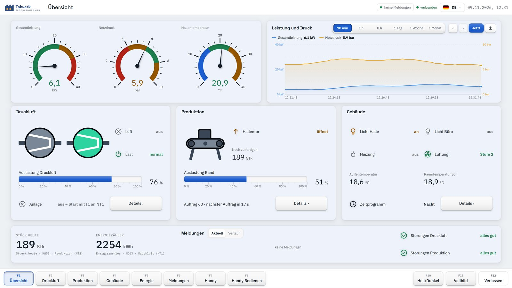
Ein Assistent führt durch die ersten Schritte. Danach sprechen Sie mit jeder easyE4 über die Verbindung, die am besten passt.
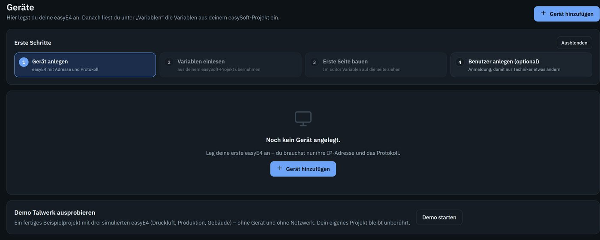
Nach der Installation zeigt „Erste Schritte“ immer den nächsten Schritt: Gerät anlegen, Variablen einlesen, erste Seite bauen, Benutzer anlegen. Erledigtes bekommt einen Haken.
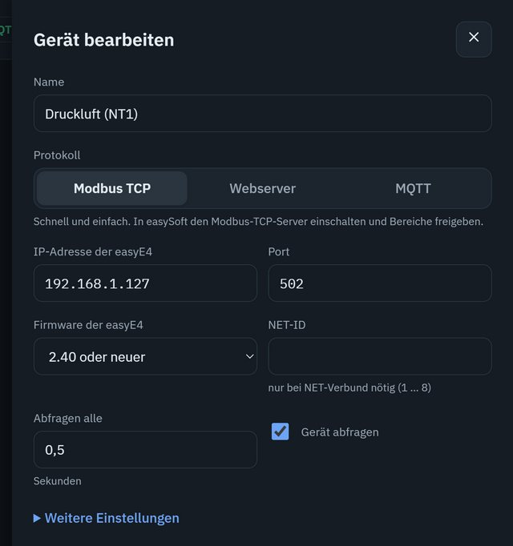
IP-Adresse eintragen, Protokoll wählen, „Verbindung testen“. Mehrere Geräte und Protokolle lassen sich in einem Projekt mischen.
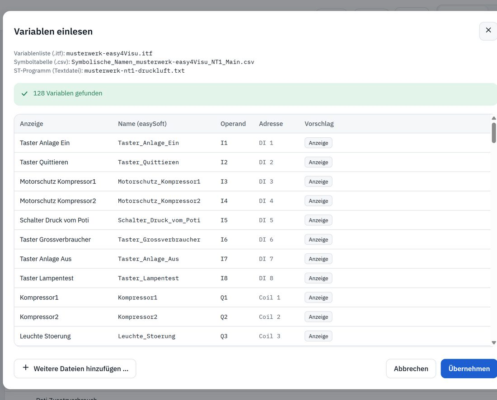
Register muss niemand kennen. easy4Visu übernimmt die Variablen direkt aus Ihrem easySoft-Projekt – mit verständlichen Namen.
wie bei Galileo – alle freigegebenen Variablen
symbolische Operanden werden zu Namen
als Textdatei gespeichert – das ganze Programm mit Kommentaren
Export der Operanden-Kommentare
Elemente auf die Seite ziehen, Variable darauf ziehen – fertig. Raster, Rahmen, Rückgängig und Vorschau sind dabei.
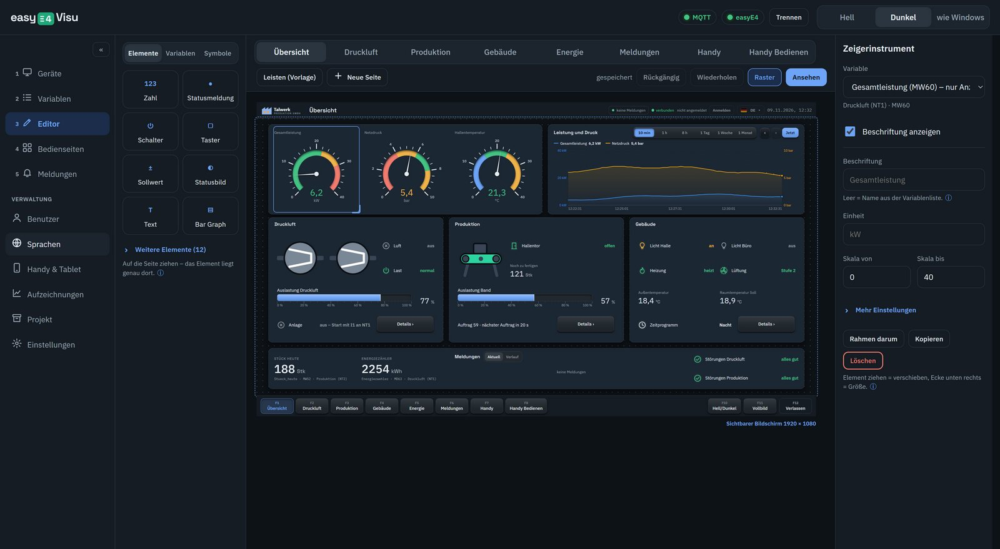
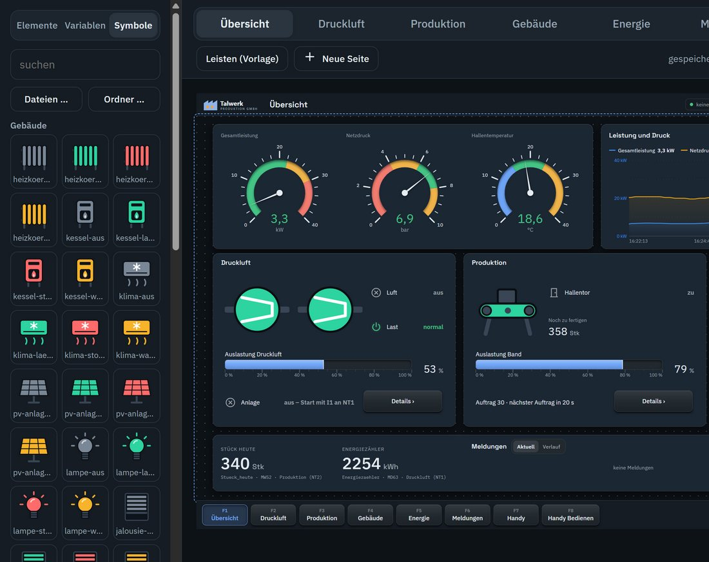
Kompressoren, Förderband, Heizung, Klima, PV, Licht, Jalousie, Rolltor, Tür und mehr – jeweils in den Zuständen aus, läuft, Warnung und Störung.
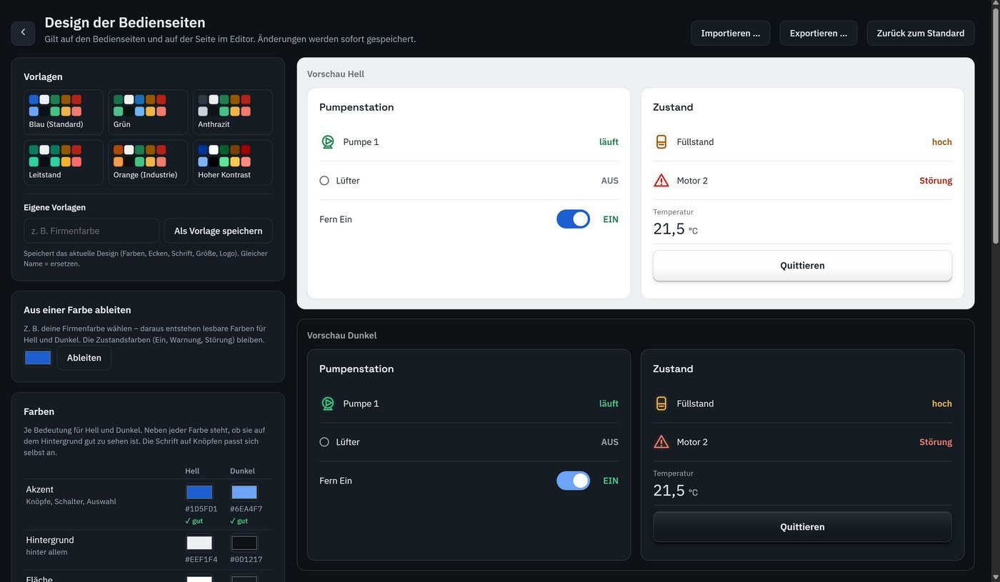
Eine Vorlage wählen oder alle Farben aus Ihrer Firmenfarbe ableiten. easy4Visu prüft dabei, ob jede Farbe gut lesbar ist.
Ein Design für alle Seiten – im hellen und im dunklen Look.
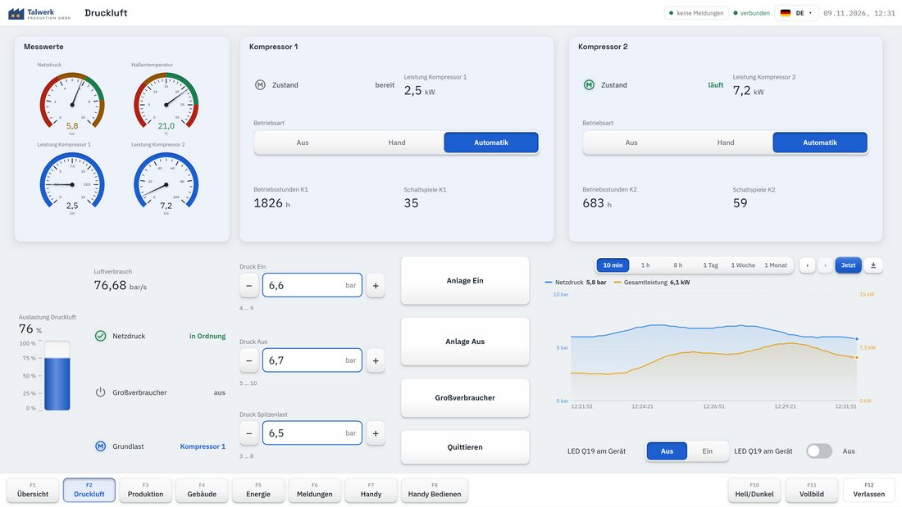
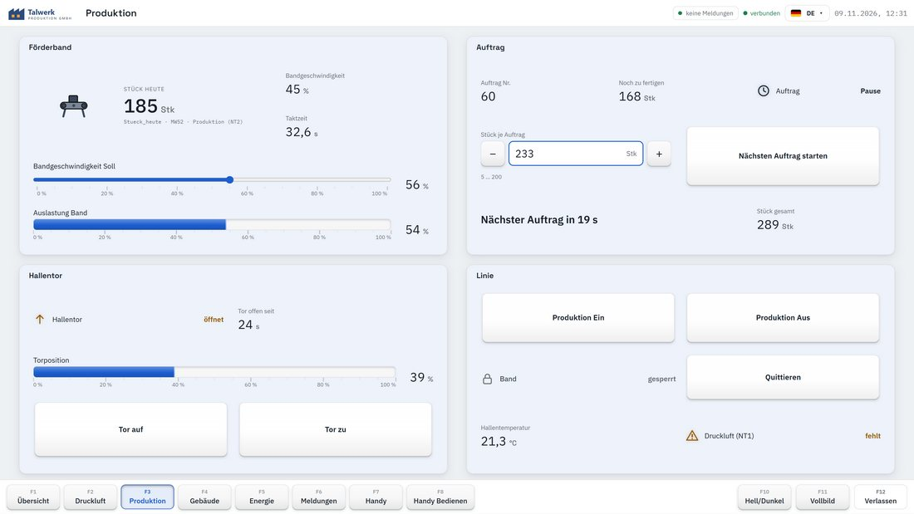
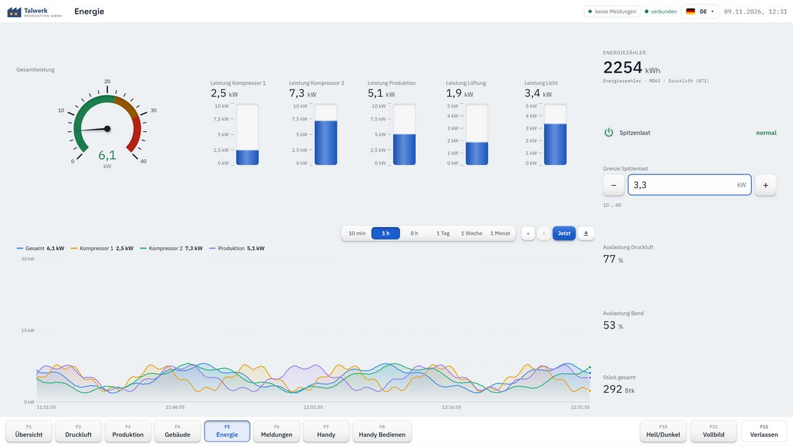
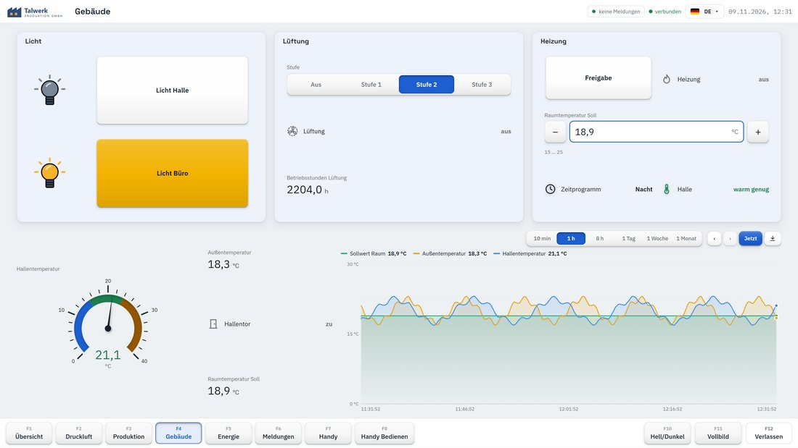
Jeder Bediener wählt seine Sprache per Fingertipp. Dieselbe Seite erscheint dann zum Beispiel auf Französisch.
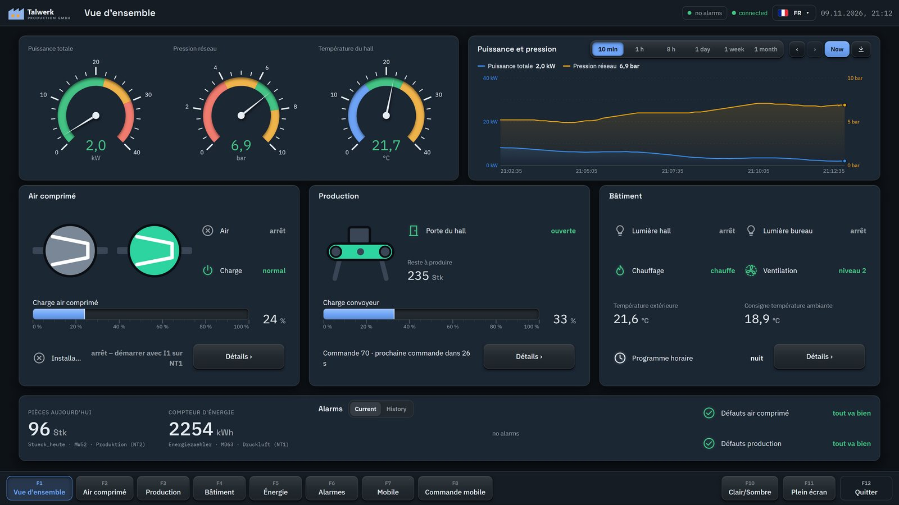
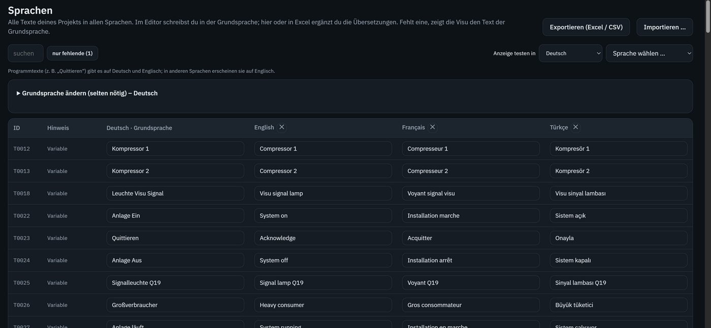
Alle Texte des Projekts stehen in einer Tabelle – Sie schreiben im Editor in Ihrer Sprache und ergänzen die Übersetzungen hier oder in Excel.
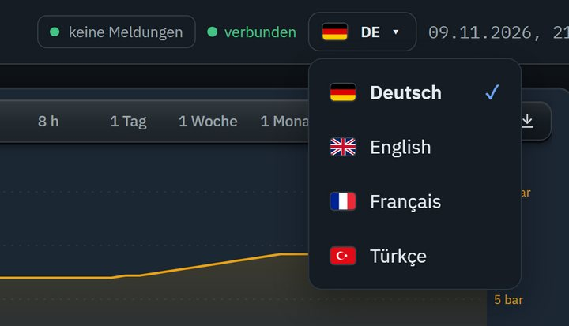
Ob oben in der Leiste, als Funktionstaste oder als Auswahl auf der Seite: Die Sprachen erscheinen mit ihrer Flagge. Die Oberfläche von easy4Visu selbst gibt es auf Deutsch und Englisch.
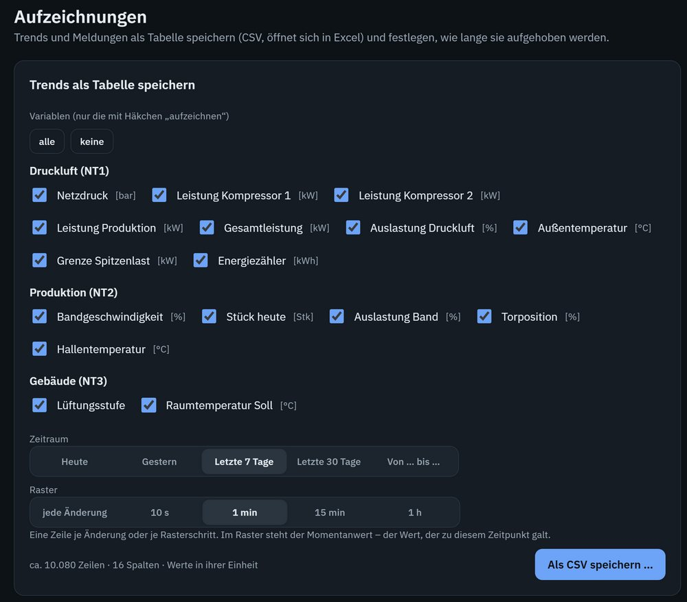
Die Datenbank ist eingebaut – kein Datenbank-Server, nichts zusätzlich zu installieren. Ein Haken an der Variable genügt, oder Sie ziehen sie einfach in einen Trend.
Störung, Warnung, Hinweis – quittieren, Verlauf, Sammelanzeige.
Beobachter, Bediener, Techniker – mit Anmeldung.
Wer hat wann was bedient – nachvollziehbar.
F1 bis F12 wie an einer Bedientafel – Seiten wechseln, Hell/Dunkel, Vollbild.
Als Bedientafel: startet mit Windows direkt im Vollbild.
Ein ganzes Projekt als eine Datei sichern und auf einem anderen PC einspielen.
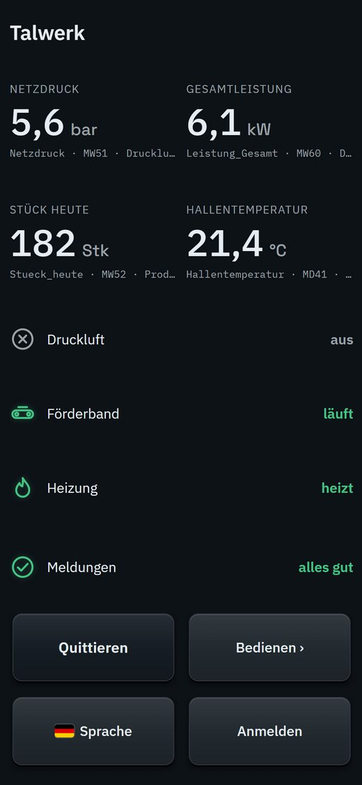
IP-Adresse und Verbindung wählen.
Aus dem easySoft-Projekt übernehmen.
Elemente und Variablen auf die Seite ziehen.
Am PC, Tablet oder Handy.
Ein Klick nach der Installation – ganz ohne easyE4 und ohne Netzwerk. Drei simulierte Steuerungen für Druckluft, Produktion und Gebäude. Die Trends sind sofort gefüllt, Störungen kommen und gehen.
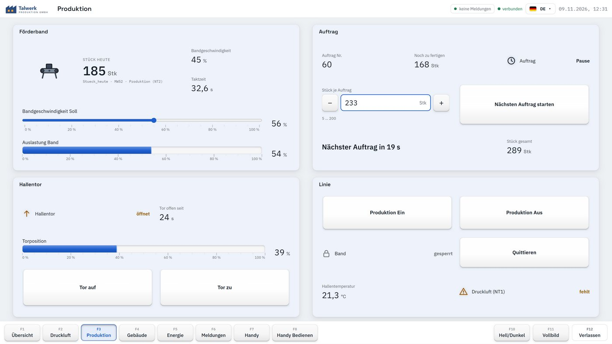
easy4Visu Version 1.0 für Windows
Der Download folgt in Kürze.Handbuch ansehen (PDF, 2,4 MB)